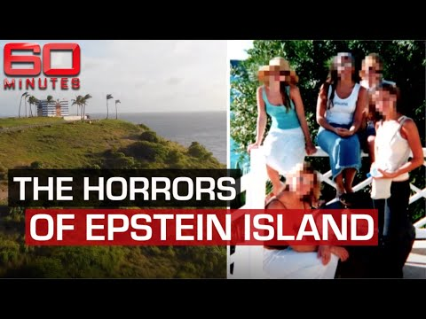

【杰弗里·爱泼斯坦的私人岛屿上究竟发生了什么？| 60分钟澳大利亚】
Summary: Substantial evidence shows Jeffrey Epstein trafficked young women and children to his private island for sexual exploitation, using his wealth and secrecy to evade authorities for years.
摘要： 大量证据表明，杰弗里·爱泼斯坦长期贩卖年轻女性和儿童至其私人岛屿进行性剥削，并利用财富和隐秘手段逃避法律制裁。

⏱️ Estimated Reading Time: 8 min
📚 高考3500生词 📚 雅思生词 📚 托福生词 📚 GRE生词 📚 UP主推荐生词
Well we we definitely received substantial evidence that he was involved in trafficking young women and children to the virgin islands for a very long period of time through our airport through his private jet.
我们确实掌握了大量证据，表明他长期通过私人飞机将年轻女性和儿童贩卖至维尔京群岛。
And then he would by helicopter or sometimes boat would then transport them over to little saint james and that's where he has his complex where he lives which is his official residence as well.
随后，他会通过直升机或船只将他们运往小圣詹姆斯岛，那里是他的住所和正式居所。
And that these young girls and women were subject to sexual assault sexual exploitation um through coercion false imprisonment where the passports at some points were taken away.
这些年轻女孩和女性遭受性侵犯和性剥削，甚至被胁迫或非法拘禁，护照也曾被没收。
The actions were just reprehensible and and it was quite a number of women and we we found through our investigation that at least up to 2018 that continued.
这些行为令人发指，涉及大量女性，我们的调查发现至少到2018年仍在持续。
So what your investigation is showing is the broad scope of jeffrey epstein's nefarious activities that it just kept going based on the evidence that we found thus far.
你们的调查揭示了杰弗里·爱泼斯坦的广泛恶行，根据现有证据，这些活动持续不断。
Let me make something very clear jeffrey epstein was very good at protecting himself and being secret you know the secrecy was he was very good at that.
必须明确的是，杰弗里·爱泼斯坦极其擅长自我保护和保密。
And because of his wealth his power he was able to do that and secure that so when you think about it he owns a private island that's an island over a mile away from saint thomas the main island and it's out there and it's isolated.
凭借财富和权力，他得以实现这一点——他拥有一座远离主岛圣托马斯的私人岛屿，位置孤立。
He purchases that right then he owns the jet that flew in to the airport it's under a name of one of the front companies that actu actually has been named in our complaint but it's him he's the member of that llc.
他购买了岛屿，还拥有以空壳公司名义注册的私人飞机（该公司在我们的起诉书中被点名），但他实际控制着这家公司。
And he owns the helicopter and the boats that took or transported him and the women and children over to the island.
他还拥有直升机及船只，用于运送自己和受害者前往岛屿。
So when you think about that it's him orchestrating all of that yes there have been baggage handlers there may have been other persons who looked and saw him and other females with young girls.
这一切均由他精心策划，尽管可能有行李员或其他目击者看到他与年轻女孩同行。
Yes but i i think that it's important that we focus on how jeffrey epstein was so able to create such an elaborate scheme especially by doing it in such secrecy.
但关键在于，他是如何以如此隐秘的方式构建这一庞大网络的。
And he had the money and power to create the secrecy so that not just local authorities but we have federal authorities here too that um that you know that are here all along not even they might have been able to see it.
他的财力与权力构筑的隐秘屏障，甚至让长期驻守的联邦当局都难以察觉。
In looking at that you you have to really you know get a good understanding of how he was able to protect and isolate himself.
必须深入理解他如何实现自我保护和隔离。
Once you get on that island how do you get off it's not like a person who's on the island can just say okay i'm going to swim to st thomas they can't do that.
一旦登岛便难以离开——无人能游泳逃回圣托马斯岛。
It's not like a person who's there and needs help that they can sneak away and run outside and flag down a vehicle or flag down a police car or run to the nearest police station like they might be able to do on st thomas on the main island.
岛上求助无门，无法像在主岛那样拦车或报警。
The island is isolated so that kind of isolation is is really how you have what you have to look at when you start to think how could this have happened for so long.
这种极端隔离正是其罪行长期未被揭露的关键。
I i think the picture you paint is a terrifying one a terrifying one of isolation but also abuse of power.
你所描绘的景象令人恐惧——不仅是孤立，更是权力滥用。
And i just wonder why the people who worked for jeffrey epstein weren't terrified for the girls going over there they knew how isolated that island was they knew the ages of those girls they saw powerful men there why weren't they terrified why didn't they become whistleblowers.
为何爱泼斯坦的员工不因女孩们的遭遇而恐惧？他们清楚岛屿的封闭性、女孩的年龄，也目睹权贵出入，却无人举报。
Well one thing i do know first of all is that there are the non-disclosure agreements that jeffrey epstein had all of the employees if not most of them sign then they had to agree not to disclose any information to law enforcement or anyone else.
首先，爱泼斯坦让员工签署保密协议，禁止向执法部门或他人透露岛上的任何信息。
Um for you know to you know regarding what goes on on that island and um and even after jeffrey epstein's death those non-disclosure agreements are still in place and still enforced by the estate.
即便在他死后，这些协议仍由其遗产管理机构强制执行。
Um so so this was just one of the ways that you can pretty much intimidate or silence people.
这正是他恐吓和压制知情者的手段之一。
But in addition to that when you see someone connected with powerful people who may visit the island or he may be involved with whether it's not whether it doesn't have to be here it could be anywhere in the world and it's known that these powerful people are his friends and associates that alone is intimidating to the ordinary citizen who's sitting there and watching this and say oh that does not look good.
此外，他与权贵的密切关系本身就对普通人构成威慑——目睹者会因畏惧其势力而不敢发声。
But could you imagine the reluctance of that person to say i'm going to come forward i'm going to tell on that person who's friends with all these powerful people.
试想，谁愿举报一个与权贵为友的人？
So that alone the way that he surrounded himself with these powerful people that was us an example of the kind of intimidation that would cause a certain cause what you're saying people to be silent about what they may see or suspect.
这种权贵环绕的布局，正是迫使人们保持沉默的恐吓手段。
As far as the virgin islands is concerned we i need to make sure that the virgin islands is not is not and is not perceived as a haven for this kind of sexual exploitation human trafficking and and sexual and child abuse.
就维尔京群岛而言，我们必须确保其不被视为性剥削、人口贩卖和虐待儿童的庇护所。
It's it's we have to make that clear it is very important that we enforce our laws against human trafficking against child abuse against um child and and and sexual exploitation of women.
必须明确：严格执行反人口贩卖、虐待儿童及性剥削的法律至关重要。
It is important that we do that because if i don't do it as the attorney general the top law enforcement person if we do not do it in the virgin islands then those types of crimes will continue to flourish.
若作为总检察长的我们未能履职，此类犯罪将在维尔京群岛持续蔓延。
Hello i'm tara brown thanks for watching to keep up with the latest from 60 minutes australia make sure you subscribe to our channel you can also download the nine now app for full episodes and other exclusive 60 minutes content.
大家好，我是塔拉·布朗。感谢观看，订阅频道以获取《60分钟澳大利亚》最新内容，或下载9Now应用观看完整剧集和独家节目。